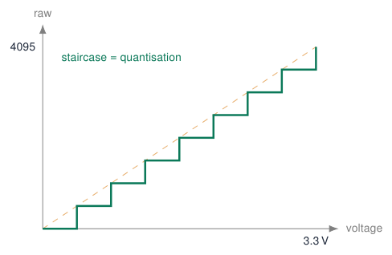
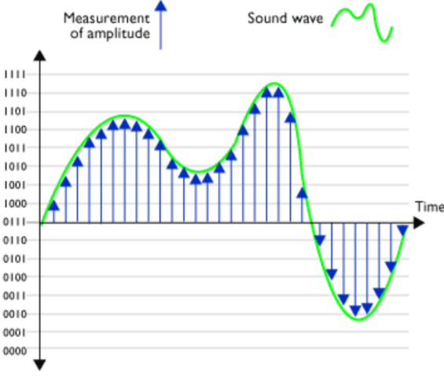
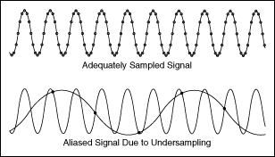
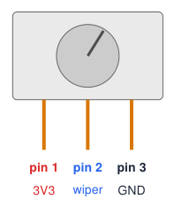
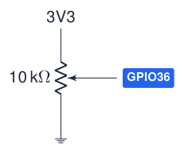
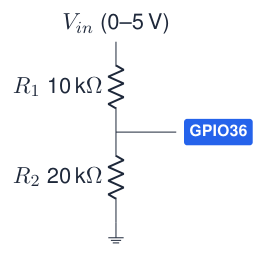
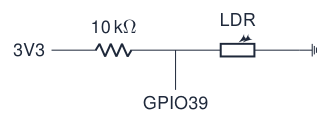
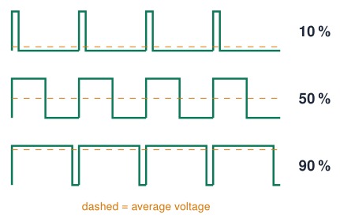
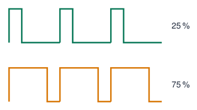
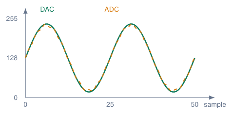

Analog Input, PWM and DAC¶
From voltage to number: the ADC¶
-
Many sensors produce a voltage that tells how much: light, temperature, position, humidity.
-
The ADC (Analog-to-Digital Converter) turns that voltage into a number.
-
ESP32: 12 bits \(\Rightarrow\) \(2^{12} = 4096\) steps:
0 V \(\rightarrow\) 0 … 3.3 V \(\rightarrow\) 4095. -
One step (LSB) \(\approx 3.3 / 4095 \approx 0.8\) mV. (The drawing uses only 3 bits = 8 steps.)
Formula
\(V = \text{raw} \times \dfrac{3.3}{4095}\) raw \(= V \times \dfrac{4095}{3.3}\)

Sources: Embedded Programming, lectures 1–6; Arduino ESP32 Core Documentation; Espressif: GPIO Matrix and Pin Mux
Sampling: reading a changing signal¶

-
Every
analogRead()is one sample: a snapshot of the voltage at that moment. -
The resolution (bits) sets the vertical precision.
-
The sample rate (samples per second) sets how fast changes can be followed.

Aliasing
Sample at least 2\(\times\) faster than the fastest change (Nyquist).
Sources: Figures: lecture 2 Embedded Programming, lectures 1–6
Connecting a potentiometer¶

-
A potentiometer is a resistor track with a sliding contact (the wiper): a voltage divider you turn by hand.
-
Outer pins: one to 3V3, the other to GND. Middle pin (wiper) to an ADC pin.
-
Turning the knob moves the wiper voltage from 0 V to 3.3 V.
-
Course board: outer pins on the 3V3/GND terminal, wiper on the AD1 terminal (GPIO36). Breadboard: any ADC1 pin (32–39).
-
Typical value: 10 k\(\Omega\) (anything 1–100 k\(\Omega\) works).
Common wiring mistakes
5 V / VIN on the pot: input above 3.3 V. Wiper to 3V3: at the end position the pot shorts 3V3 to GND. Outer pins on the same rail: the value never changes. Outer pins swapped: direction reversed (harmless).
Sources: Embedded Programming, lectures 1–6
From ADC value to voltage, step by step¶
The steps
-
analogRead(36)measures the wiper voltage and returns a number 0 … 4095 (12 bits). -
0 means 0 V, 4095 means (about) 3.3 V: the relation is linear.
-
Convert: \(V = \text{raw} \times \dfrac{3.3}{4095}\)
-
Percentage of the knob: \(\% = \text{raw} \times \dfrac{100}{4095}\)
Use 4095.0
raw * 3.3 / 4095.0 is correct. With raw / 4095 * 3.3 the integer division gives 0 for every raw value below 4095.
Worked examples
| raw | voltage | knob |
|---|---|---|
| 0 | 0.00 V | 0 % |
| 1024 | 0.83 V | 25 % |
| 2048 | 1.65 V | 50 % |
| 3071 | 2.47 V | 75 % |
| 4095 | 3.30 V | 100 % |
Example: raw \(= 2048\) \(\Rightarrow\) \(2048 \times 3.3 / 4095 = 1.650\) V
Real ESP32
The ESP32 ADC is not perfectly linear: analogReadMilliVolts() applies the factory calibration (following sections).
Code: read the potentiometer and convert to volts¶
const int POT_PIN = 36; // AD1 terminal (wiper)
const float VREF = 3.3; // full-scale voltage
const int ADC_MAX = 4095; // 12-bit ADC
float toVolts(int raw) {
return raw * VREF / ADC_MAX; // float result
}
int toPercent(int raw) {
return raw * 100L / ADC_MAX; // 100L: no overflow
}
void setup() {
Serial.begin(115200);
}
void loop() {
int raw = analogRead(POT_PIN);
float volts = toVolts(raw);
int mv = analogReadMilliVolts(POT_PIN); // calibrated
Serial.printf("raw:%d,volts:%.2f,mV:%d,percent:%d\n",
raw, volts, mv, toPercent(raw));
delay(100);
}
-
Upload, open the Serial Monitor (115200) and turn the knob from end to end.
-
Check: raw goes 0 \(\rightarrow\) 4095, volts 0.00 \(\rightarrow\) 3.30.
-
Open the Serial Plotter: the labels become four lines.
-
Compare
voltswithmVand with a multimeter on the wiper.
What you will see
Near the ends the calculated volts and the calibrated mV differ: that is the ADC non-linearity.
Analog input: the 12-bit ADC¶
const int POT_PIN = 36; // AD1 terminal: ADC1, OK with Wi-Fi
void setup() {
Serial.begin(115200);
analogReadResolution(12); // 0..4095 (default)
analogSetAttenuation(ADC_11db); // range ~0..3.1 V
}
void loop() {
int raw = analogRead(POT_PIN);
int mv = analogReadMilliVolts(POT_PIN); // calibrated
Serial.printf("raw=%4d voltage=%4d mV\n", raw, mv);
delay(200);
}

-
\(V \approx \text{raw} \cdot 3.3 / 4095\), but the ADC is non-linear: prefer
analogReadMilliVolts(). -
Use Serial Plotter to see the signal.
-
Noisy? Average \(N\) samples.
Sources: Arduino ESP32 Core Documentation; Espressif: GPIO Matrix and Pin Mux
The ESP32 ADC is not perfect¶
| Attenuation | Accurate input range |
|---|---|
ADC_0db |
100 – 950 mV |
ADC_2_5db |
100 – 1250 mV |
ADC_6db |
150 – 1750 mV |
ADC_11db (default) |
150 – 2450 mV |
-
Non-linear near 0 V and above \(\approx\) 2.5 V.
-
Noisy: average several samples.
-
ADC2 does not work while Wi-Fi is on.
Copying Arduino Uno code
float v = raw * 5.0 / 1023.0; is for a 10-bit, 5 V Uno.
On the ESP32: raw * 3.3 / 4095.0, or better analogReadMilliVolts(pin), which uses the factory calibration.
Change resolution
analogReadResolution(10); gives 0–1023 like an Uno; analogSetAttenuation() or analogSetPinAttenuation() changes the range.
Sources: Arduino ESP32 Core Documentation; ESP32 Series Datasheet
Measuring higher voltages: the voltage divider¶

-
Two resistors divide the voltage:
\(V_{out} = V_{in} \cdot \dfrac{R_2}{R_1 + R_2} = 5 \cdot \dfrac{20}{30} = 3.33\) V -
In code, multiply back: \(V_{in} = V_{out} \cdot \dfrac{R_1 + R_2}{R_2} = V_{out} \times 1.5\)
-
Use for: batteries, 5 V sensors, solar panels.
-
Choose \(R_1 + R_2\) in the 10–100 k\(\Omega\) range: small current, still fast enough for the ADC.
A potentiometer is a voltage divider
The wiper moves the point between \(R_1\) and \(R_2\): 0 V at one end, 3.3 V at the other.
Example: light sensor with map() and constrain()¶
const int LDR_PIN = 39; // AD2 terminal
const int DARK = 300; // raw value when covered
const int LIGHT = 3500; // raw value under a lamp
void setup() { Serial.begin(115200); }
void loop() {
int raw = analogRead(LDR_PIN);
int percent = map(raw, DARK, LIGHT, 0, 100);
percent = constrain(percent, 0, 100);
Serial.printf("raw=%d light=%d %%\n", raw, percent);
delay(200);
}

-
map(x, inLo, inHi, outLo, outHi)rescales linearly (integers only). -
constrain(x, lo, hi)clips to the range: needed when the sensor goes beyond your calibration. -
Calibrate: measure DARK and LIGHT in the real environment first.
Calibration procedure
1. Print raw values. 2. Note min and max. 3. Put them in constants. 4. Map.
PWM: faking an analog output¶

-
Pulse Width Modulation: switch the pin on and off very fast.
-
Duty cycle = time on / period.
-
The average voltage = duty \(\times\) 3.3 V.
-
LEDs and motors respond to the average: smooth dimming, speed control.
-
Frequency high enough that you do not see flicker (\(>\) 200 Hz for LEDs).
Simplest way
analogWrite(pin, 0..255); works on the ESP32 core 3.x (it uses the LEDC peripheral underneath).
PWM with the LEDC peripheral: fading an LED¶
const int LED_PIN = 18;
const int FREQ_HZ = 5000;
const int RES_BITS = 8; // duty 0..255
void setup() {
ledcAttach(LED_PIN, FREQ_HZ, RES_BITS); // core 3.x
}
void loop() {
for (int d = 0; d <= 255; d++) { ledcWrite(LED_PIN, d); delay(4); }
for (int d = 255; d >= 0; d--) { ledcWrite(LED_PIN, d); delay(4); }
}
Core 2.x (old tutorials)
ledcSetup() + ledcAttachPin(), and ledcWrite() takes a channel.

-
16 channels, any output pin.
-
Duty \(= \text{value} / (2^{\text{res}}-1)\).
-
Higher frequency \(\Rightarrow\) lower max. resolution.
-
analogWrite()also works (uses LEDC).
Sources: Migration from Arduino ESP32 Core 2.x to 3.0
Example: potentiometer controls brightness¶
const int POT_PIN = 36;
const int LED_PIN = 22; // green LED
void setup() {
ledcAttach(LED_PIN, 5000, 12); // 5 kHz, 12 bit
}
void loop() {
int raw = analogRead(POT_PIN); // 0..4095
ledcWrite(LED_PIN, raw); // duty 0..4095
delay(10);
}
-
Input range = output range (both 12 bit): no conversion needed!
-
With 8-bit PWM you would write
raw / 16ormap(raw, 0, 4095, 0, 255).
Gamma
Our eyes are non-linear: the LED seems to reach full brightness at half the pot. Try duty = raw * raw / 4095; for a more natural feel.
PWM application: driving a hobby servo¶
const int SERVO_PIN = 13;
void writeAngle(int deg) {
int us = map(deg, 0, 180, 500, 2500); // pulse width
uint32_t duty = (uint32_t)us * 65535 / 20000;
ledcWrite(SERVO_PIN, duty);
}
void setup() {
ledcAttach(SERVO_PIN, 50, 16); // 50 Hz = 20 ms, 16 bit
}
void loop() {
writeAngle(0); delay(1000);
writeAngle(90); delay(1000);
writeAngle(180); delay(1000);
}
Servo signal
Period 20 ms; pulse 0.5–2.5 ms sets the angle 0–180°.
Power
Feed the servo from 5 V (VIN), not from 3V3; connect the grounds. The 3.3 V signal is usually accepted.
Library alternative: ESP32Servo.
True analog output (DAC) and capacitive touch¶
// 8-bit DAC: GPIO25 (DAC1), GPIO26 (DAC2)
void setup() {}
void loop() {
for (int v = 0; v < 256; v++) {
dacWrite(25, v); // 0..255 -> 0..3.3 V
delayMicroseconds(100);
}
}
-
A real voltage, not PWM: audio, reference levels.
-
Only on the original ESP32 (and S2).
const int THRESHOLD = 30;
void setup() { Serial.begin(115200); }
void loop() {
int t = touchRead(T0); // T0 = GPIO4
Serial.println(t); // try the Plotter
if (t < THRESHOLD) Serial.println("Touched!");
delay(100);
}
-
Any wire or copper pad becomes a button.
-
ESP32: value drops when touched.
-
Calibrate the threshold per board.
Sources: Espressif: GPIO Matrix and Pin Mux
DAC example: generate a sine wave and read it back¶
#include <math.h>
const int DAC_PIN = 25;
const int ADC_PIN = 32;
const int N = 250;
const float frequency = 10.0;
void setup() {
Serial.begin(115200);
analogReadResolution(12); // ADC: 0..4095
}
void loop() {
for (int i = 0; i < N; i++) {
float angle = 2.0 * PI * frequency * i / N;
int dacValue = 128 + 127 * sin(angle);
dacWrite(DAC_PIN, dacValue);
int adcValue = analogRead(ADC_PIN);
int adc8bit = adcValue * 255 / 4095;
Serial.printf("DAC:%d,ADC:%d\n", dacValue, adc8bit);
// delay(5);
}
}
-
Classic ESP32: jumper GPIO25 (DAC1) to GPIO32 (ADC1) on the same board.
-
These GPIOs are on the DevKit headers; GPIO32 is not the carrier’s AD1 terminal (GPIO36).
-
dacWrite: 8-bit voltage command, 0–255. -
analogRead: 12-bit measurement, 0–4095. -
Rescale ADC to 0–255 to compare the curves. This is not voltage calibration; noise, nonlinearity and clipping can cause differences.
Sources: Espressif DAC API; ADC API; GPIO Matrix and Pin Mux
Serial Plotter: compare the DAC command and ADC measurement¶
-
Upload the sketch; select its serial port.
-
Open Tools \(\rightarrow\) Serial Plotter: 115200 baud.
-
Enable DAC and ADC. Each line adds one point per series.
| Version | Visible X-axis points |
|---|---|
| Arduino IDE 1.8.x | 500 |
| Arduino IDE 2.x | 50 (default) |
X counts samples, not seconds: \(M\) visible points span approximately \(M/f_s\) seconds.

Illustrative curves, not a hardware capture.
This sketch has \(250/10=25\) samples per cycle: 50 points show 2 cycles; 500 show 20.
Does frequency = 10 mean 10 Hz?
Here: 10 cycles per 250 samples, so \(f_{\rm signal}=f_s\times10/250\). For 10 Hz, sample at 250 samples/s (4 ms per sample). Without timed sampling, ADC and serial execution set the pace; delay(5) adds at least 5 ms per sample.
Sources: Arduino Serial Plotter; Arduino IDE issue 803: 50 vs 500 points
Quiz: analog and PWM¶
-
analogRead()returns 2048. What is the voltage (ideal ADC)?Check your answer
\(2048 \times 3.3 / 4095 \approx 1.65\) V.
-
How many levels does a 10-bit ADC have? And a 12-bit one?
Check your answer
1024 and 4096.
-
8-bit PWM, value 64: what is the duty cycle and average voltage?
Check your answer
\(64/255 \approx 25\,\%\) \(\Rightarrow\) \(\approx\) 0.83 V.
-
A 5 V sensor output must be read. Design a divider.
Check your answer
E.g. \(R_1\) = 10 k\(\Omega\), \(R_2\) = 20 k\(\Omega\) \(\Rightarrow\) max 3.33 V.
-
Why does the pot only reach “full brightness” at half-turn?
Check your answer
Human vision is logarithmic; use a gamma curve.
Exercises: analog and PWM¶
Exercise 1 – Voltmeter
Print the voltage on AD1 with 2 decimals using your own float toVolts(int raw), and compare with analogReadMilliVolts() and a multimeter.
Exercise 2 – Breathing LED
Make the blue LED “breathe” (slow fade in/out, 3 s period) without using delay() longer than 5 ms.
Exercise 3 – Night light with hysteresis
LDR + LED: the LED fades in when it gets dark (below 30 %) and out again above 40 %.
Exercise 4 – Servo follows pot
The servo angle follows the potentiometer (0–180°). Smooth the input with a moving average.